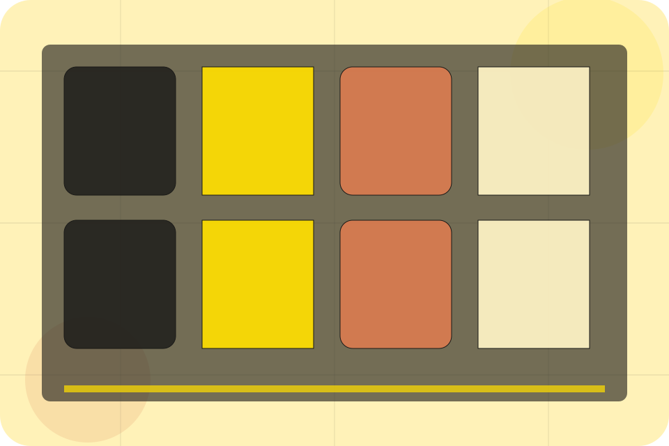
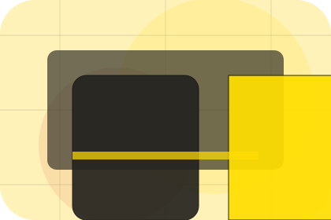
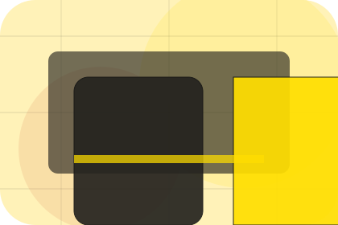
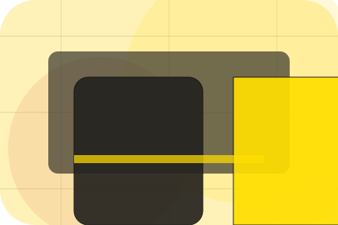
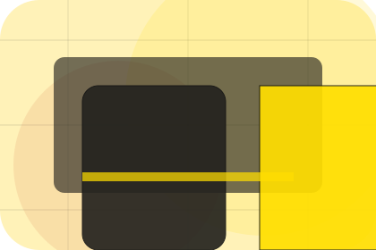
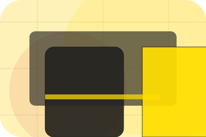

Shop / 01
Shop by Linea
Shop shaped for fashion, apparel & accessories decisions.
Shop opens as a clear fashion decision hub: what Linea offers, who it helps, why it matters, and which route to take first.
The first screen combines positioning, proof, primary action, and fast internal navigation, so people can act immediately or compare the rest of the shop route with context.
Curated indexProject contextEnquiry path
Oversized campaign hero
Browse the looks
Select the closest route and Linea keeps the next step, proof, and follow-up expectation aligned with taste, status and movement.

Shop / 02
Apparel inside shop
Apparel adds editorial context to the shop route, using the sunlit campaign lookbook structure to support taste, status and movement before visitors choose a next step.
Linea uses sunny lookbook cards and focused copy to make the decision easier to scan, aligning the section with taste, status and movement rather than filling space.
Explore Shop
Context
Apparel gives the page a specific angle instead of repeating the navigation label.

Judgment
The sunny lookbook cards show what to compare, what to avoid, and what matters most for fashion, apparel & accessories visitors.
Direction
The final cue points to a useful internal route so the section keeps the journey moving.
Shop / 03
Accessories inside shop
Accessories adds editorial context to the shop route, using the sunlit campaign lookbook structure to support taste, status and movement before visitors choose a next step.
Linea uses sunny lookbook cards and focused copy to make the decision easier to scan, aligning the section with taste, status and movement rather than filling space.
Explore ShopAccessories gives the page a specific angle instead of repeating the navigation label.
The sunny lookbook cards show what to compare, what to avoid, and what matters most for fashion, apparel & accessories visitors.
The final cue points to a useful internal route so the section keeps the journey moving.
Shop / 04
New inside shop
New adds editorial context to the shop route, using the sunlit campaign lookbook structure to support taste, status and movement before visitors choose a next step.
Linea uses sunny lookbook cards and focused copy to make the decision easier to scan, aligning the section with taste, status and movement rather than filling space.
Explore ShopContext
New gives the page a specific angle instead of repeating the navigation label.
Judgment
The sunny lookbook cards show what to compare, what to avoid, and what matters most for fashion, apparel & accessories visitors.
Direction
The final cue points to a useful internal route so the section keeps the journey moving.
Shop / 05
Filters inside shop
Filters adds editorial context to the shop route, using the sunlit campaign lookbook structure to support taste, status and movement before visitors choose a next step.
Linea uses sunny lookbook cards and focused copy to make the decision easier to scan, aligning the section with taste, status and movement rather than filling space.
Explore ShopContext
Filters gives the page a specific angle instead of repeating the navigation label.
Judgment
The sunny lookbook cards show what to compare, what to avoid, and what matters most for fashion, apparel & accessories visitors.
Direction
The final cue points to a useful internal route so the section keeps the journey moving.
Shop / 06
Cards inside shop
Cards adds editorial context to the shop route, using the sunlit campaign lookbook structure to support taste, status and movement before visitors choose a next step.
Linea uses sunny lookbook cards and focused copy to make the decision easier to scan, aligning the section with taste, status and movement rather than filling space.
Explore Shop
Context
Cards gives the page a specific angle instead of repeating the navigation label.
Shop / 07
Styling inside shop
Styling adds editorial context to the shop route, using the sunlit campaign lookbook structure to support taste, status and movement before visitors choose a next step.
Linea uses sunny lookbook cards and focused copy to make the decision easier to scan, aligning the section with taste, status and movement rather than filling space.
Explore ShopContext
Styling gives the page a specific angle instead of repeating the navigation label.

Judgment
The sunny lookbook cards show what to compare, what to avoid, and what matters most for fashion, apparel & accessories visitors.

Direction
The final cue points to a useful internal route so the section keeps the journey moving.
Shop / 08
Stories behind reviews
Reviews converts customer proof into a useful buying signal: the problem, the experience, and what changed afterward.
Proof stays believable by focusing on situation, service experience, and practical change rather than vague praise or unsupported results.
Explore Shop
Situation
What the visitor needed before choosing Linea, written with enough context to feel real.
Experience
How the service, product, or support felt during the process, not just that it was good.
Change
What became easier to decide, complete, buy, book, or trust after the interaction.
Shop / 09
Cart inside shop
Cart adds editorial context to the shop route, using the sunlit campaign lookbook structure to support taste, status and movement before visitors choose a next step.
Linea uses sunny lookbook cards and focused copy to make the decision easier to scan, aligning the section with taste, status and movement rather than filling space.
Explore ShopContext
Cart gives the page a specific angle instead of repeating the navigation label.
Judgment
The sunny lookbook cards show what to compare, what to avoid, and what matters most for fashion, apparel & accessories visitors.
Direction
The final cue points to a useful internal route so the section keeps the journey moving.
Important notes before you act
Information is provided for planning and should be reviewed for the final client, location, and operating rules.